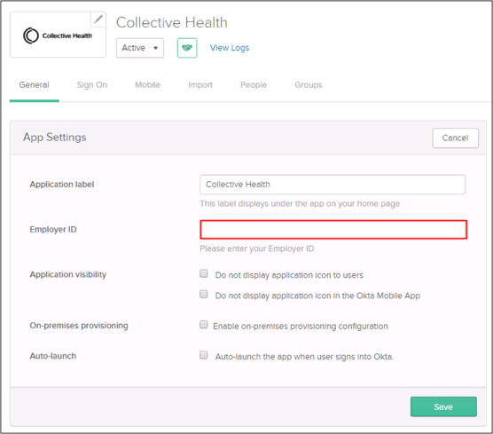

Contact the Collective Health Support team and request that they enable SAML 2.0 for your account.
Include the following IDP Metadata URL with your request:
Sign into the Okta Admin dashboard to generate this value.
The Collective Health Support team will process your request and will provide you with an Employer ID.
In Okta, select the General tab for the Collective Health app, then click Edit.
Enter the Employer ID provided to you by Collective Health into the corresponding field.
Click Save.

Done!
Notes:
SP-initiated flows are supported.
IDP-initiated flows and Just In Time (JIT) provisioning are not supported.